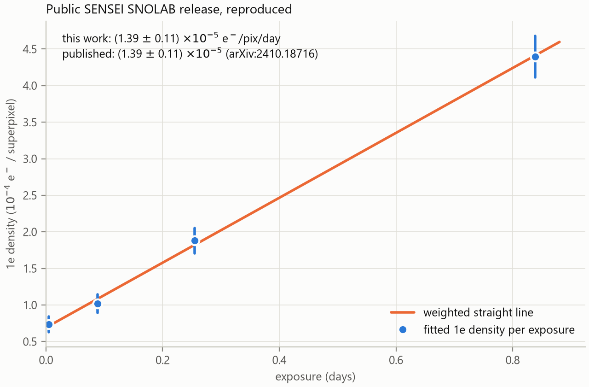
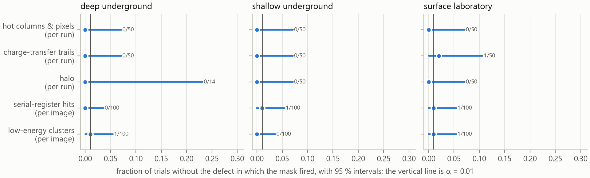
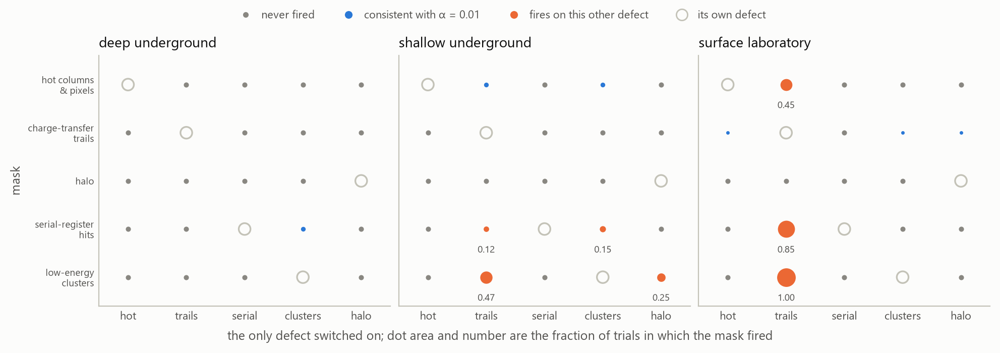
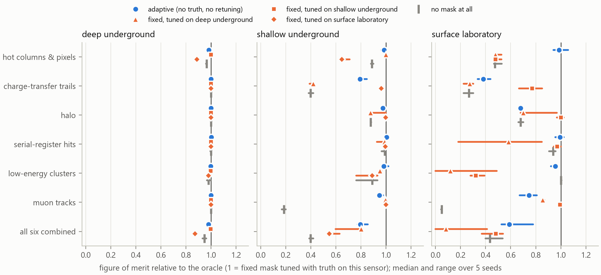

Masks that calibrate themselves
Can the pixel masks of Skipper-CCD analyses do their job without being tuned to the particular sensor they run on?
Short answer, from simulations of three different sensors (5 independent seeds). Of the 28 cases in which a mask tuned by hand on one sensor was moved unchanged to another, 5 were worse than applying no mask at all in every seed, and 2 made no difference. The clearest was low-energy clusters on the surface laboratory sensor (tuned on deep underground): a median 0.12 of the oracle, where doing nothing scores 1.00.
The same masks written as procedures that calibrate themselves were worse than no mask in every seed in 1 of 14 cases (low-energy clusters on the surface laboratory sensor (adaptive)), and better than no mask in every seed in 12. Measured against a mask tuned with truth on the same sensor they reach a median 0.98, with a worst case of 0.38 as a median over seeds (charge-transfer trails on the surface laboratory sensor (adaptive); 0.34 in its worst seed). In 8 cases a transplanted mask beat the adaptive one in every seed: self-calibration avoids the large failures but is not free.
On the three sensors with their defects switched off, the adaptive masks fired no more often than α allows (and apparently less often; 50 runs cannot tell). The sixth mask, for muon tracks, cannot be in that test because tracks are what a real sensor cannot switch off; asked where they can be absent, in the simulator with the flux set to zero, it fired in 0 of 600 images. On the surface sensor, though, the adaptive low-energy-cluster mask keeps only 0.85–0.92 of the signal, 0.85 even in a seed with no low-energy clusters at all: it fires on charge-transfer trail electrons, a false positive that the defect-free test cannot see because it switches every defect off at once, which is why the defects were also switched on one at a time. Switching the defects on one at a time instead of all off at once shows it directly: of the 60 combinations in which the defect present is not the mask's own, 7 fire on it, the worst in 1.00 of trials while masking 0.121 of the image.
On a real sensor that nothing here was tuned for, the four exposures of the public SENSEI release, the hot-column procedure ends up flagging the 7 loudest columns of the longest exposure and nothing else, all of them inside the mask the collaboration published. The five adaptive masks together take 0.0007–0.0094 of the image, where that published mask takes 0.042–0.130.
On the 2 seeds run once after the code was frozen: 4 of 26 transplanted cases worse than no mask in every seed, 0 of 13 adaptive ones, and a median adaptive 0.98 of the oracle. The adaptive case that is worse than no mask in every development seed (low-energy clusters on the surface laboratory sensor (adaptive)) has fewer than 20 target events in the held-out seeds, so it is not counted there, although there too its figure of merit is below no mask (0.96, 0.92 of no mask).
The question
A Skipper-CCD counts single electrons in millions of pixels. Before any physics is extracted, analyses discard pixels with masks, each aimed at one problem: charge left behind during transfer, hits in the serial register, hot columns and pixels, photons emitted around high-energy tracks (the halo), clusters of low-energy events, and muons. Every mask has sizes and thresholds — a radius, a trail length, a rate cut — chosen by hand for one sensor, readout and site.
The working hypothesis: what transfers between sensors is not the numbers but the procedure used to choose them. So each mask was written twice: a fixed form with hand-set constants, and an adaptive form that measures its own sizes on the images it is applied to and sets its threshold by a false-positive rate (α = 0.01, corrected for the number of tests) or by measurable physical properties of the sensor.
| Mask | Fixed form | Adaptive form |
|---|---|---|
| Hot columns & pixels | column rate above k × median | Poisson tail of each column's count against its own exposure, Bonferroni over columns, single columns before groups |
| Charge-transfer trails | L pixels after every bright pixel | downstream vs. upstream excess of single electrons around the same bright pixel (binomial); symmetric sources cancel |
| Halo | disc of radius R around bright pixels | each annulus against everything outside it (conditional binomial); no far field needed |
| Serial-register hits | rows with n charged pixels in a window of w | densest window of each row against the image's own occupancy, at several widths |
| Low-energy clusters | disc around events with ≥ m neighbours | neighbours within r against a Poisson count for the local valid area, at several radii |
| Muon tracks | charge and length cuts | charge of a minimum-ionising track for the measured length and this sensor's thickness; straight, piled-up or cut by the border |
How it was tested
A simulator that remembers where every electron came from
Each source of charge fills its own map, so a mask can be scored against exactly the events it should remove. Three sensors differ the way real deployments do. Their geometry, noise, dark rates, background rates and muon fluxes come from public measurements (SENSEI at SNOLAB and MINOS, Oscura sensors at the surface, SNO, PDG); defect populations are not published in a transferable form and are scenario values chosen to differ between sensors.
| Sensor | Pixels | Thickness (µm) | Noise (e−) | Exposure | Dark rate (e−/pix/day) | Muons (cm−2 day−1) | High-E (dru) | Halo µm / trail px / hot cols |
|---|---|---|---|---|---|---|---|---|
| Deep underground | 3072 × 512 | 665 | 0.14 | 20 h | 1.4 × 10-5 | 2.9 × 10-5 | 5.0 × 101 | 100 / 30 / 4 |
| Shallow underground | 3072 × 443 | 675 | 0.14 | 20 h | 1.6 × 10-4 | 6.9 × 100 | 3.4 × 103 | 150 / 60 / 10 |
| Surface laboratory | 1278 × 1058 | 725 | 0.17 | 1 h | 3.0 × 10-2 | 1.4 × 103 | 3.0 × 104 | 250 / 100 / 25 |
Three versions of every mask were compared on an independent test stack of each sensor: the oracle (fixed form tuned with the simulator's truth on that sensor), the transplant (the oracle constants of a different sensor) and the adaptive form, calibrated without truth. The figure of merit is S/√(S+B): surviving injected signal against surviving target background.
A check against real images
Before relying on anything, the public SENSEI SNOLAB data release was read and its single-electron rate reproduced: 1.39 × 10-5 ± 1.1 × 10-6 e−/pix/day against the published 1.39 × 10-5 ± 1.1 × 10-6 (pull -0.02).

Which bit of the public mask is which (geometric check)
The release names its masks but not their bits. Each mask leaves a signature independent of its parameters; the bit order was checked against them. The noisy-row bit never appears in the active area, so it is not verified.
| Bit | Name (hypothesis) | Fraction in whole columns | Bright pixel upstream / only downstream | Median distance to >100 e (px) |
|---|---|---|---|---|
| 0x1 | neighbour | 0.06 | 0.15 / 0.06 | 359 |
| 0x4 | bleeding | 0.05 | 1.00 / 0.00 | 104 |
| 0x8 | halo | 0.00 | 0.20 / 0.18 | 51 |
| 0x10 | crosstalk | 0.01 | 0.07 / 0.00 | 752 |
| 0x40 | edge | 1.00 | 0.02 / 0.04 | 435 |
| 0x200 | bad pixel | 0.00 | 0.04 / 0.01 | 574 |
| 0x400 | bad column | 1.00 | 0.04 / 0.02 | 481 |
Result 1 · How often the adaptive masks fire when there is nothing to find
50 independent runs of each of the three sensors with every defect the masks look for switched off, keeping what a real sensor cannot switch off: dark current, spurious charge, the injected signal, muon tracks and high-energy deposits. The stack-calibrated masks decide once per run of 2 images; the others decide per image. The test is two-sided, so a mask that is far more conservative than α is visible as well.

| Sensor | Adaptive mask | Unit | Fired / trials | Rate | 95 % interval | Against α |
|---|---|---|---|---|---|---|
| Deep underground | Hot columns | per run | 0 / 50 | 0.000 | [0.000, 0.071] | contains α |
| Deep underground | Charge-transfer trails | per run | 0 / 50 | 0.000 | [0.000, 0.071] | contains α |
| Deep underground | Halo | per run | 0 / 14 | 0.000 | [0.000, 0.232] | contains α |
| Deep underground | Serial-register hits | per image | 0 / 100 | 0.000 | [0.000, 0.036] | contains α |
| Deep underground | Low-energy clusters | per image | 1 / 100 | 0.010 | [0.000, 0.054] | contains α |
| Shallow underground | Hot columns | per run | 0 / 50 | 0.000 | [0.000, 0.071] | contains α |
| Shallow underground | Charge-transfer trails | per run | 0 / 50 | 0.000 | [0.000, 0.071] | contains α |
| Shallow underground | Halo | per run | 0 / 50 | 0.000 | [0.000, 0.071] | contains α |
| Shallow underground | Serial-register hits | per image | 1 / 100 | 0.010 | [0.000, 0.054] | contains α |
| Shallow underground | Low-energy clusters | per image | 0 / 100 | 0.000 | [0.000, 0.036] | contains α |
| Surface laboratory | Hot columns | per run | 0 / 50 | 0.000 | [0.000, 0.071] | contains α |
| Surface laboratory | Charge-transfer trails | per run | 1 / 50 | 0.020 | [0.001, 0.106] | contains α |
| Surface laboratory | Halo | per run | 0 / 50 | 0.000 | [0.000, 0.071] | contains α |
| Surface laboratory | Serial-register hits | per image | 1 / 100 | 0.010 | [0.000, 0.054] | contains α |
| Surface laboratory | Low-energy clusters | per image | 1 / 100 | 0.010 | [0.000, 0.054] | contains α |
The muon mask is not in that table, and could not be: the five above are switched off by setting a defect rate to zero, while tracks are what a real sensor cannot switch off, and the halo is generated from their charge. Asked separately, on sensors with the tracks and the high-energy background switched off as well, it fired in 0 of 600 images (all three sensors, 200 images each), an upper limit of 0.018 at 95 %. Its threshold is physical rather than a tail probability — a cluster long enough, straight enough and carrying about the charge a minimum-ionising particle leaves crossing this sensor — so there is no α for it to match; what is measured is whether dark current can imitate a track, and at these exposures it cannot.
Result 2 · What a mask fires on when the defect present is not its own
The defect-free test above switches every defect off together, so a mask that fires on another mask's defect passes it unseen. Here each sensor is simulated with one defect at its preset value and the other four at zero, 15 configurations in all, 20 runs each, with the same chain of adaptive calibrations and the same things a real sensor cannot switch off. A mask that fires when its own defect is absent and another one is present is firing on the wrong thing.
Of the 60 combinations in which the defect present is not the one the mask looks for, 7 fire more often than α allows and 53 are consistent with it. The largest is the low-energy clusters mask on the surface laboratory sensor when the only defect present is charge-transfer trails: it fires in 1.00 of trials and masks a median 0.121 of the image.

| Sensor | Only defect present | Mask that fired | Unit | Fired / trials | Rate | 95 % interval | Median fraction masked | Against α |
|---|---|---|---|---|---|---|---|---|
| Shallow underground | Charge-transfer trails | Serial-register hits | per image | 5 / 40 | 0.12 | [0.042, 0.268] | 0.000 | fires on it (at the detection floor) |
| Shallow underground | Charge-transfer trails | Low-energy clusters | per image | 19 / 40 | 0.47 | [0.315, 0.639] | 0.000 | fires on it |
| Shallow underground | Low-energy clusters | Serial-register hits | per image | 6 / 40 | 0.15 | [0.057, 0.298] | 0.000 | fires on it |
| Shallow underground | Halo | Low-energy clusters | per image | 10 / 40 | 0.25 | [0.127, 0.412] | 0.000 | fires on it |
| Surface laboratory | Charge-transfer trails | Hot columns | per run | 9 / 20 | 0.45 | [0.231, 0.685] | 0.000 | fires on it |
| Surface laboratory | Charge-transfer trails | Serial-register hits | per image | 34 / 40 | 0.85 | [0.702, 0.943] | 0.001 | fires on it |
| Surface laboratory | Charge-transfer trails | Low-energy clusters | per image | 40 / 40 | 1.00 | [0.912, 1.000] | 0.121 | fires on it |
Every combination, including those consistent with α
| Sensor | Only defect present | Mask | Unit | Fired / trials | Rate | 95 % interval | Median fraction masked | Against α |
|---|---|---|---|---|---|---|---|---|
| Deep underground | Hot columns & pixels | Charge-transfer trails | per run | 0 / 20 | 0.00 | [0.000, 0.168] | 0.000 | consistent with α |
| Deep underground | Hot columns & pixels | Halo | per run | 0 / 5 | 0.00 | [0.000, 0.522] | 0.000 | consistent with α |
| Deep underground | Hot columns & pixels | Serial-register hits | per image | 0 / 40 | 0.00 | [0.000, 0.088] | 0.000 | consistent with α |
| Deep underground | Hot columns & pixels | Low-energy clusters | per image | 0 / 40 | 0.00 | [0.000, 0.088] | 0.000 | consistent with α |
| Deep underground | Charge-transfer trails | Hot columns | per run | 0 / 20 | 0.00 | [0.000, 0.168] | 0.000 | consistent with α |
| Deep underground | Charge-transfer trails | Halo | per run | 0 / 5 | 0.00 | [0.000, 0.522] | 0.000 | consistent with α |
| Deep underground | Charge-transfer trails | Serial-register hits | per image | 0 / 40 | 0.00 | [0.000, 0.088] | 0.000 | consistent with α |
| Deep underground | Charge-transfer trails | Low-energy clusters | per image | 0 / 40 | 0.00 | [0.000, 0.088] | 0.000 | consistent with α |
| Deep underground | Serial-register hits | Hot columns | per run | 0 / 20 | 0.00 | [0.000, 0.168] | 0.000 | consistent with α |
| Deep underground | Serial-register hits | Charge-transfer trails | per run | 0 / 20 | 0.00 | [0.000, 0.168] | 0.000 | consistent with α |
| Deep underground | Serial-register hits | Halo | per run | 0 / 3 | 0.00 | [0.000, 0.708] | 0.000 | consistent with α |
| Deep underground | Serial-register hits | Low-energy clusters | per image | 0 / 40 | 0.00 | [0.000, 0.088] | 0.000 | consistent with α |
| Deep underground | Low-energy clusters | Hot columns | per run | 0 / 20 | 0.00 | [0.000, 0.168] | 0.000 | consistent with α |
| Deep underground | Low-energy clusters | Charge-transfer trails | per run | 0 / 20 | 0.00 | [0.000, 0.168] | 0.000 | consistent with α |
| Deep underground | Low-energy clusters | Halo | per run | 0 / 7 | 0.00 | [0.000, 0.410] | 0.000 | consistent with α |
| Deep underground | Low-energy clusters | Serial-register hits | per image | 4 / 40 | 0.10 | [0.028, 0.237] | 0.000 | consistent with α |
| Deep underground | Halo | Hot columns | per run | 0 / 20 | 0.00 | [0.000, 0.168] | 0.000 | consistent with α |
| Deep underground | Halo | Charge-transfer trails | per run | 0 / 20 | 0.00 | [0.000, 0.168] | 0.000 | consistent with α |
| Deep underground | Halo | Serial-register hits | per image | 0 / 40 | 0.00 | [0.000, 0.088] | 0.000 | consistent with α |
| Deep underground | Halo | Low-energy clusters | per image | 0 / 40 | 0.00 | [0.000, 0.088] | 0.000 | consistent with α |
| Shallow underground | Hot columns & pixels | Charge-transfer trails | per run | 0 / 20 | 0.00 | [0.000, 0.168] | 0.000 | consistent with α |
| Shallow underground | Hot columns & pixels | Halo | per run | 0 / 20 | 0.00 | [0.000, 0.168] | 0.000 | consistent with α |
| Shallow underground | Hot columns & pixels | Serial-register hits | per image | 0 / 40 | 0.00 | [0.000, 0.088] | 0.000 | consistent with α |
| Shallow underground | Hot columns & pixels | Low-energy clusters | per image | 0 / 40 | 0.00 | [0.000, 0.088] | 0.000 | consistent with α |
| Shallow underground | Charge-transfer trails | Hot columns | per run | 2 / 20 | 0.10 | [0.012, 0.317] | 0.000 | consistent with α |
| Shallow underground | Charge-transfer trails | Halo | per run | 0 / 20 | 0.00 | [0.000, 0.168] | 0.000 | consistent with α |
| Shallow underground | Charge-transfer trails | Serial-register hits | per image | 5 / 40 | 0.12 | [0.042, 0.268] | 0.000 | fires on it (at the detection floor) |
| Shallow underground | Charge-transfer trails | Low-energy clusters | per image | 19 / 40 | 0.47 | [0.315, 0.639] | 0.000 | fires on it |
| Shallow underground | Serial-register hits | Hot columns | per run | 0 / 20 | 0.00 | [0.000, 0.168] | 0.000 | consistent with α |
| Shallow underground | Serial-register hits | Charge-transfer trails | per run | 0 / 20 | 0.00 | [0.000, 0.168] | 0.000 | consistent with α |
| Shallow underground | Serial-register hits | Halo | per run | 0 / 20 | 0.00 | [0.000, 0.168] | 0.000 | consistent with α |
| Shallow underground | Serial-register hits | Low-energy clusters | per image | 0 / 40 | 0.00 | [0.000, 0.088] | 0.000 | consistent with α |
| Shallow underground | Low-energy clusters | Hot columns | per run | 2 / 20 | 0.10 | [0.012, 0.317] | 0.000 | consistent with α |
| Shallow underground | Low-energy clusters | Charge-transfer trails | per run | 0 / 20 | 0.00 | [0.000, 0.168] | 0.000 | consistent with α |
| Shallow underground | Low-energy clusters | Halo | per run | 0 / 20 | 0.00 | [0.000, 0.168] | 0.000 | consistent with α |
| Shallow underground | Low-energy clusters | Serial-register hits | per image | 6 / 40 | 0.15 | [0.057, 0.298] | 0.000 | fires on it |
| Shallow underground | Halo | Hot columns | per run | 0 / 20 | 0.00 | [0.000, 0.168] | 0.000 | consistent with α |
| Shallow underground | Halo | Charge-transfer trails | per run | 0 / 20 | 0.00 | [0.000, 0.168] | 0.000 | consistent with α |
| Shallow underground | Halo | Serial-register hits | per image | 0 / 40 | 0.00 | [0.000, 0.088] | 0.000 | consistent with α |
| Shallow underground | Halo | Low-energy clusters | per image | 10 / 40 | 0.25 | [0.127, 0.412] | 0.000 | fires on it |
| Surface laboratory | Hot columns & pixels | Charge-transfer trails | per run | 1 / 20 | 0.05 | [0.001, 0.249] | 0.000 | consistent with α |
| Surface laboratory | Hot columns & pixels | Halo | per run | 0 / 20 | 0.00 | [0.000, 0.168] | 0.000 | consistent with α |
| Surface laboratory | Hot columns & pixels | Serial-register hits | per image | 0 / 40 | 0.00 | [0.000, 0.088] | 0.000 | consistent with α |
| Surface laboratory | Hot columns & pixels | Low-energy clusters | per image | 0 / 40 | 0.00 | [0.000, 0.088] | 0.000 | consistent with α |
| Surface laboratory | Charge-transfer trails | Hot columns | per run | 9 / 20 | 0.45 | [0.231, 0.685] | 0.000 | fires on it |
| Surface laboratory | Charge-transfer trails | Halo | per run | 0 / 20 | 0.00 | [0.000, 0.168] | 0.000 | consistent with α |
| Surface laboratory | Charge-transfer trails | Serial-register hits | per image | 34 / 40 | 0.85 | [0.702, 0.943] | 0.001 | fires on it |
| Surface laboratory | Charge-transfer trails | Low-energy clusters | per image | 40 / 40 | 1.00 | [0.912, 1.000] | 0.121 | fires on it |
| Surface laboratory | Serial-register hits | Hot columns | per run | 0 / 20 | 0.00 | [0.000, 0.168] | 0.000 | consistent with α |
| Surface laboratory | Serial-register hits | Charge-transfer trails | per run | 0 / 20 | 0.00 | [0.000, 0.168] | 0.000 | consistent with α |
| Surface laboratory | Serial-register hits | Halo | per run | 0 / 20 | 0.00 | [0.000, 0.168] | 0.000 | consistent with α |
| Surface laboratory | Serial-register hits | Low-energy clusters | per image | 0 / 40 | 0.00 | [0.000, 0.088] | 0.000 | consistent with α |
| Surface laboratory | Low-energy clusters | Hot columns | per run | 0 / 20 | 0.00 | [0.000, 0.168] | 0.000 | consistent with α |
| Surface laboratory | Low-energy clusters | Charge-transfer trails | per run | 1 / 20 | 0.05 | [0.001, 0.249] | 0.000 | consistent with α |
| Surface laboratory | Low-energy clusters | Halo | per run | 0 / 20 | 0.00 | [0.000, 0.168] | 0.000 | consistent with α |
| Surface laboratory | Low-energy clusters | Serial-register hits | per image | 0 / 40 | 0.00 | [0.000, 0.088] | 0.000 | consistent with α |
| Surface laboratory | Halo | Hot columns | per run | 0 / 20 | 0.00 | [0.000, 0.168] | 0.000 | consistent with α |
| Surface laboratory | Halo | Charge-transfer trails | per run | 1 / 20 | 0.05 | [0.001, 0.249] | 0.000 | consistent with α |
| Surface laboratory | Halo | Serial-register hits | per image | 0 / 40 | 0.00 | [0.000, 0.088] | 0.000 | consistent with α |
| Surface laboratory | Halo | Low-energy clusters | per image | 0 / 40 | 0.00 | [0.000, 0.088] | 0.000 | consistent with α |
Result 3 · Transplanted constants can do harm; self-calibration avoids the large failures, at a cost

| Evaluated on | Mask | Target events | No mask | Adaptive | Fixed, tuned on deep | Fixed, tuned on shallow | Fixed, tuned on surface |
|---|---|---|---|---|---|---|---|
| Deep underground | Hot columns & pixels | 59 | 0.97 (0.96–0.97) | 0.98 (0.98–0.99) | oracle = 1 | 1.00 (1.00–1.00) | 0.89 (0.88–0.90) |
| Deep underground | Charge-transfer trails | 0 too few to compare | 1.00 (1.00–1.00) | 1.00 (1.00–1.00) | oracle = 1 | 1.00 (1.00–1.00) | 1.00 (1.00–1.00) |
| Deep underground | Halo | 0 too few to compare | 1.00 (1.00–1.00) | 1.00 (1.00–1.00) | oracle = 1 | 1.00 (1.00–1.00) | 1.00 (1.00–1.00) |
| Deep underground | Serial-register hits | 3 too few to compare | 1.00 (0.99–1.00) | 1.00 (1.00–1.00) | oracle = 1 | 1.00 (1.00–1.00) | 1.00 (1.00–1.00) |
| Deep underground | Low-energy clusters | 25 | 0.98 (0.97–1.00) | 1.00 (0.99–1.00) | oracle = 1 | 1.00 (0.99–1.00) | 0.98 (0.97–1.00) |
| Deep underground | Muon tracks | 0 too few to compare | 1.00 (1.00–1.00) | 1.00 (1.00–1.00) | oracle = 1 | 1.00 (1.00–1.00) | 1.00 (1.00–1.00) |
| Deep underground | All six combined | 81 | 0.95 (0.93–0.96) | 0.98 (0.98–0.99) | oracle = 1 | 1.00 (0.99–1.00) | 0.87 (0.86–0.90) |
| Shallow underground | Hot columns & pixels | 176 | 0.89 (0.88–0.90) | 0.98 (0.96–1.00) | 1.00 (1.00–1.00) | oracle = 1 | 0.65 (0.63–0.71) |
| Shallow underground | Charge-transfer trails | 3237 | 0.40 (0.38–0.42) | 0.79 (0.78–0.85) | 0.42 (0.39–0.42) | oracle = 1 | 0.96 (0.95–0.97) |
| Shallow underground | Halo | 211 | 0.88 (0.88–0.88) | 0.97 (0.97–0.99) | 0.88 (0.88–1.00) | oracle = 1 | 1.00 (0.99–1.00) |
| Shallow underground | Serial-register hits | 24 | 0.99 (0.96–0.99) | 1.01 (1.00–1.01) | 0.99 (0.93–1.00) | oracle = 1 | 1.00 (0.99–1.01) |
| Shallow underground | Low-energy clusters | 176 | 0.89 (0.76–0.93) | 0.98 (0.96–1.02) | 0.95 (0.94–0.97) | oracle = 1 | 0.89 (0.76–0.93) |
| Shallow underground | Muon tracks | 14116 | 0.19 (0.17–0.20) | 0.95 (0.94–0.98) | 1.00 (0.99–1.00) | oracle = 1 | 1.00 (1.00–1.00) |
| Shallow underground | All six combined | 4093 | 0.40 (0.39–0.42) | 0.80 (0.77–0.86) | 0.80 (0.60–0.81) | oracle = 1 | 0.55 (0.54–0.63) |
| Surface laboratory | Hot columns & pixels | 1657 | 0.47 (0.47–0.53) | 0.99 (0.94–1.06) | 0.48 (0.47–0.53) | 0.48 (0.47–0.53) | oracle = 1 |
| Surface laboratory | Charge-transfer trails | 66249 | 0.27 (0.22–0.30) | 0.38 (0.34–0.44) | 0.27 (0.22–0.30) | 0.77 (0.67–0.85) | oracle = 1 |
| Surface laboratory | Halo | 2049 | 0.68 (0.66–0.70) | 0.68 (0.66–0.70) | 0.70 (0.68–0.97) | 1.00 (0.97–1.02) | oracle = 1 |
| Surface laboratory | Serial-register hits | 76 | 0.94 (0.91–0.96) | 0.99 (0.96–1.02) | 0.59 (0.18–0.85) | 0.97 (0.94–1.00) | oracle = 1 |
| Surface laboratory | Low-energy clusters | 41 | 1.00 (1.00–1.01) | 0.96 (0.92–0.97) | 0.12 (0.00–0.49) | 0.32 (0.28–0.39) | oracle = 1 |
| Surface laboratory | Muon tracks | 175494 | 0.05 (0.04–0.05) | 0.75 (0.67–0.81) | 0.86 (0.85–0.87) | 0.99 (0.99–1.00) | oracle = 1 |
| Surface laboratory | All six combined | 70035 | 0.43 (0.40–0.54) | 0.59 (0.53–0.78) | 0.08 (0.00–0.41) | 0.48 (0.37–0.54) | oracle = 1 |
Target removed and clean pixels kept at each working point (medians over seeds)
| Sensor | Mask | Target events | Adaptive: removed | Adaptive: clean kept | Oracle: removed | Oracle: clean kept |
|---|---|---|---|---|---|---|
| Deep underground | Hot columns & pixels | 59 | 0.39 | 1.00 | 0.86 | 1.00 |
| Deep underground | Charge-transfer trails | 0 | – | 1.00 | – | 1.00 |
| Deep underground | Halo | 0 | – | 1.00 | – | 1.00 |
| Deep underground | Serial-register hits | 3 | 1.00 | 1.00 | 1.00 | 1.00 |
| Deep underground | Low-energy clusters | 25 | 1.00 | 0.99 | 1.00 | 1.00 |
| Deep underground | Muon tracks | 0 | – | 1.00 | – | 1.00 |
| Shallow underground | Hot columns & pixels | 176 | 0.70 | 1.00 | 0.97 | 0.97 |
| Shallow underground | Charge-transfer trails | 3237 | 0.89 | 0.94 | 1.00 | 0.86 |
| Shallow underground | Halo | 211 | 0.67 | 0.98 | 0.91 | 0.96 |
| Shallow underground | Serial-register hits | 24 | 1.00 | 1.00 | 0.69 | 1.00 |
| Shallow underground | Low-energy clusters | 176 | 0.93 | 0.96 | 0.96 | 0.94 |
| Shallow underground | Muon tracks | 14116 | 1.00 | 1.00 | 1.00 | 1.00 |
| Surface laboratory | Hot columns & pixels | 1657 | 0.94 | 0.98 | 1.00 | 0.86 |
| Surface laboratory | Charge-transfer trails | 66249 | 0.86 | 0.50 | 1.00 | 0.11 |
| Surface laboratory | Halo | 2049 | 0.00 | 1.00 | 0.94 | 0.51 |
| Surface laboratory | Serial-register hits | 76 | 0.65 | 1.00 | 0.80 | 0.98 |
| Surface laboratory | Low-energy clusters | 41 | 0.33 | 0.89 | 0.00 | 1.00 |
| Surface laboratory | Muon tracks | 175494 | 1.00 | 0.95 | 1.00 | 0.97 |
What the adaptive masks measured on each sensor
| Sensor | Seed | Trail length h / v (px) | Halo radius (px) | Halo calibrated | Hot columns found | Hot columns simulated |
|---|---|---|---|---|---|---|
| Deep underground | seed_20260915 | 0 / 0 | 0 | yes | 0 | 4 |
| Shallow underground | seed_20260915 | 140 / 55 | 10 | yes | 3 | 10 |
| Surface laboratory | seed_20260915 | 130 / 95 | 0 | yes | 25 | 25 |
| Deep underground | seed_20260916 | 0 / 0 | 0 | no | 0 | 4 |
| Shallow underground | seed_20260916 | 125 / 60 | 10 | yes | 7 | 10 |
| Surface laboratory | seed_20260916 | 130 / 85 | 0 | yes | 25 | 25 |
| Deep underground | seed_20260917 | 0 / 0 | 0 | yes | 2 | 4 |
| Shallow underground | seed_20260917 | 140 / 50 | 10 | yes | 7 | 10 |
| Surface laboratory | seed_20260917 | 115 / 80 | 0 | yes | 27 | 25 |
| Deep underground | seed_20260920 | 0 / 0 | 0 | yes | 1 | 4 |
| Shallow underground | seed_20260920 | 140 / 55 | 15 | yes | 10 | 10 |
| Surface laboratory | seed_20260920 | 130 / 95 | 0 | yes | 25 | 25 |
| Deep underground | seed_20260921 | 0 / 0 | 0 | yes | 2 | 4 |
| Shallow underground | seed_20260921 | 150 / 50 | 10 | yes | 5 | 10 |
| Surface laboratory | seed_20260921 | 105 / 85 | 0 | yes | 31 | 25 |
Result 4 · The same procedures on a real sensor
Everything above is simulated. Here the adaptive masks run unchanged on the 4 exposures of the public SENSEI SNOLAB release: a fourth sensor, real, with a geometry none of the presets has (3072 × 16 active superpixels, each binning 32 physical rows, so a step along a column is 32 times a step along a row). Nothing about it was tuned, and the release publishes its own mask, so where the two overlap they can be compared. The pairing of one of our masks with a bit of that mask follows the hypothesis tested against the release's own geometry earlier on this page.
Given only the images, the estimator measures a readout noise of 0.141–0.142 e, where the independent fit of the rate reproduction above, on the same files, gives 0.1413–0.1420 e, and a single-electron density that grows with exposure.
What the hot-column procedure finds. It flags 2, 4, 6, 7 columns as the exposure grows, and the sets are nested: each one keeps the previous columns and adds the next loudest. At the longest exposure the 7 columns with the highest rate of charged pixels are exactly the ones it flags, and every one of them lies inside the release's own bad-column mask; the next column down (1659, at 0.019 charged pixels per pixel) is in the release's mask and is not flagged, which is the conservative direction. Each flagged column carries 102 to 1830 times the charged-pixel rate of the columns left alone.
The two directions of agreement say different things, so both are here. Of what we flag, the release also flags 0.99–1.00: we stay inside their mask. Of what they flag, we flag 0.027–0.095: they mask far more than we do, 0.042 to 0.130 of the image against our 0.0007 to 0.0094. The first number is the easy direction — a procedure that flagged one true column would score 1.00 — and it rests on 2 to 7 column decisions, not on the hundreds of pixels it is counted over.
| Exposure | Images | Trigger pixels | Measured noise (e) | 1e density (e/pix) | Trail lengths h / v | Halo radius | Hot columns / pixels | We mask (union) | The release masks |
|---|---|---|---|---|---|---|---|---|---|
| 0 h | 14 | 0 | 0.142 | 1.34 × 10-4 | 0 / 0 | 0 | 2 / 8 | 0.0007 | 0.042 |
| 2 h | 14 | 70 | 0.142 | 1.72 × 10-4 | 0 / 0 | 0 | 4 / 8 | 0.0013 | 0.055 |
| 6 h | 14 | 103 | 0.141 | 2.95 × 10-4 | 0 / 0 | 0 | 6 / 12 | 0.0038 | 0.061 |
| 20 h | 13 | 844 | 0.141 | 6.52 × 10-4 | 0 / 0 | 25 | 7 / 11 | 0.0094 | 0.130 |
The trail calibration chose length zero on every exposure, which the expectation registered in PLAN.md did not predict. The reason is in the result file: the release blinds its hits, so a whole exposure holds 0, 70, 103, 844 trigger pixels. At the longest exposure the test does see the excess on the right side — 13 single electrons within 5 superpixels downstream of a trigger against 2 upstream, p = 0.0037 — but the corrected threshold is p < 6.3e-05. Part of that strictness is an artefact: the correction counts 80 distance blocks per direction, and on an image 16 rows tall only three of them can ever be filled. Correcting for the tests that can exist would ask for about 1.7×10-3, which this p-value still does not meet, so the decision stands. The halo radius behaves the same way: 0 where there are no triggers, 25 column widths at the longest exposure.
Every mask against its counterpart in the release — the low-energy-cluster mask is not here, since the release publishes no counterpart to it, although the union above includes it
| Exposure | Our mask | Release bit | Fraction of the image we mask | Of ours, also theirs | Of theirs, also ours |
|---|---|---|---|---|---|
| 0 h | Hot columns & pixels | bad column | bad pixel | 0.0007 | 1.00 | 0.027 |
| 0 h | Charge-transfer trails | bleeding | 0.0000 | — | — |
| 0 h | Halo | halo | 0.0000 | — | — |
| 0 h | Serial-register hits | noisy row | 0.0000 | — | — |
| 2 h | Hot columns & pixels | bad column | bad pixel | 0.0013 | 1.00 | 0.055 |
| 2 h | Charge-transfer trails | bleeding | 0.0000 | — | 0.000 |
| 2 h | Halo | halo | 0.0000 | — | 0.000 |
| 2 h | Serial-register hits | noisy row | 0.0000 | — | — |
| 6 h | Hot columns & pixels | bad column | bad pixel | 0.0020 | 1.00 | 0.081 |
| 6 h | Charge-transfer trails | bleeding | 0.0000 | — | 0.000 |
| 6 h | Halo | halo | 0.0000 | — | 0.000 |
| 6 h | Serial-register hits | noisy row | 0.0000 | — | — |
| 20 h | Hot columns & pixels | bad column | bad pixel | 0.0023 | 0.99 | 0.095 |
| 20 h | Charge-transfer trails | bleeding | 0.0000 | — | 0.000 |
| 20 h | Halo | halo | 0.0071 | 1.00 | 0.119 |
| 20 h | Serial-register hits | noisy row | 0.0000 | — | — |
What the checks caught
Every error below was found by a test or a diagnostic against the simulator's truth, fixed, and recorded.
- The pixel threshold of every “adaptive” mask was set from the simulator's true mean charge: truth leaking into the masks, and at the surface a threshold of 0.50 e that turned read noise into fake events. Found by an independent review; the threshold is now measured from each image's charge histogram and every result was re-run.
- The simulator redrew hot columns in every image, which would have invalidated every calibration on a stack.
- The hot-column mask flagged the innocent neighbours of each hot column (17 of them in a test).
- The halo test treated its reference rate as exact; a 4σ fluctuation gave a halo where there was none.
- At the surface no pixel is far from every muon track: the first halo calibration fell back to its largest radius and masked the whole image. It now compares each annulus with everything outside it.
- Crossing muons merged into wide clusters that the track criterion rejected (24 % of muon pixels missed); tracks cut by the image border were missed too.
- Hot columns were calibrated before charge-transfer trails, whose vertical trails from muons made 69 of 81 flagged columns false.
- On the real release the halo mask measured distance in superpixels, and a superpixel there bins 32 physical rows, so a radius of 15 covered the whole height of a 16-row frame. It hid the loudest column in the image from the hot-column calibration, which then did not flag it — the same cross-talk Result 2 measures, on real data. Found by a second independent review; distances now carry the pixel geometry.
- The fraction of the image masked was reported as the sum of five overlapping masks rather than their union, and only the flattering direction of the agreement with the release's own mask was in the prose. Same review.
- The one-defect-at-a-time verdict was applied to sixty cells at 5 % each, with no correction for their number; about one and a half would have been called by chance. The bound is now taken at a confidence corrected for the cells tested.
- In one seed the halo radius, chosen by significance alone, reached 125 px on the surface sensor and masked 99.9 % of the image. The radius now maximises a figure of merit estimated from the data within the significant range; all seeds were re-run, plus two seeds never used during development.
Limitations
- Defect populations (hot columns, trail lengths, serial hits, clusters) are scenario values, not measurements.
- One figure of merit; the oracle is tuned mask by mask, not jointly, so a combined adaptive mask can exceed it.
- Adaptive trail lengths are limited by the number of bright pixels in the calibration stack: they are short when data are few.
- The muon figure of merit counts pixels, which weighs every missed track pixel heavily.
- The adaptive muon mask uses the sensor's diffusion model and the minimum-ionising charge per length, and the simulated muons carry exactly that mean charge with no Landau tail, so its charge tolerance is tested against the model it was built from.
- The defects are switched on one at a time, which finds a mask firing on another single defect, but not what a mask does when several defects overlap in the same pixels.
- The oracle is the best fixed mask on a grid of parameters. Every seed passed a check that no optimum lies on an edge of its grid other than a physical bound (a length of zero, a factor of one), but the grid is still finite.
- An adaptive mask cannot tell injected signal from dark current, so it estimates signal as every uniform single electron; the evaluation counts only the injected signal. At the surface, where dark current is ~20 times the signal, the adaptive halo therefore chooses not to mask and reaches ~0.7 of the oracle. The figure of merit was not changed after this was seen (the no-mask reference and wider grids were added later, for other reasons).
- On the real release only four of the six masks can be checked at all: it publishes no counterpart to the low-energy-cluster mask, and its binned superpixels make the muon mask's geometry meaningless, so that mask was not run there.
Reproduce
uv sync --group dev
uv run python scripts/fetch_public_data.py
uv run pytest
uv run python analysis/reproduce_release_rate.py
uv run python analysis/check_release_mask_bits.py
uv run python analysis/adaptive_masks_on_public_data.py
uv run python analysis/null_false_positive_rates.py 50
uv run python analysis/muon_mask_null_rate.py 100
uv run python analysis/cross_defect_false_positives.py 20
for seed in 20260915 20260916 20260917 20260920 20260921; do
uv run python analysis/compare_masks_across_sensors.py 4 --seed $seed --out results/compare_masks/seed_$seed
done
uv run python analysis/figure_release_rate.py
uv run python analysis/figure_null_rates.py
uv run python analysis/figure_cross_defect.py
uv run python analysis/figure_compare_masks.py
uv run python analysis/build_report.py
uv run python scripts/make_pdf.pyEvery output has a .provenance.json sidecar with the script, git commit, input hashes, parameters and seed;
PROVENANCE.md says how each result was checked.
What that reproduction covered, as of 2026-09-16, written by hand unlike every number above it, because it describes runs made outside this repository. Each was re-run in a fresh clone that shares nothing with the working copy but the commit and the pinned environment, and compared at a relative tolerance of 1e-9. Identical, largest relative difference zero: the rate reproduction, the mask-bit check, the defect-free test and the real-sensor result at the current commit; the muon-mask test in a second clone; all five seeds of the transplant result at the commit that froze it, whose code has changed since only inside a docstring; and the one-defect-at-a-time result, the slowest of them at about two and a half hours, re-run in a clone that had to be resumed after something killed it six runs in. Every analysis in this repository has therefore been produced twice, the second time somewhere that shares nothing with the working copy but the commit and the pinned environment.